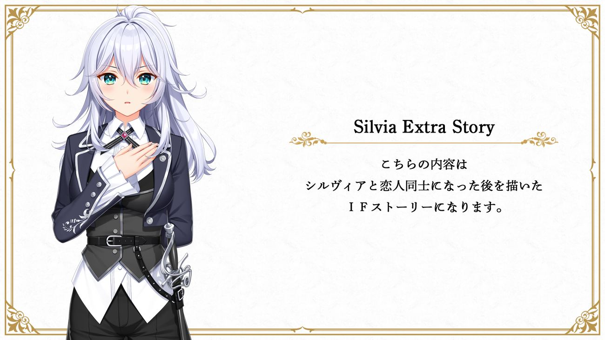
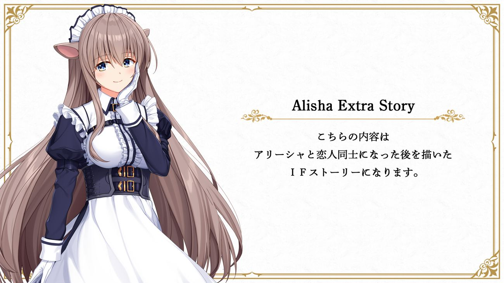

Extra Story


Unravel Trigger juga memiliki hidangan penutup berupa IF route para ajudan Main Heroine dan After Story tiap heroine.
Seperti After Story pada umumnya, chapter2 ini tidak memiliki jalan cerita — hanya menyuguhkan momen para Heroine sampingan yang gak kebagian porsi di cerita utama.